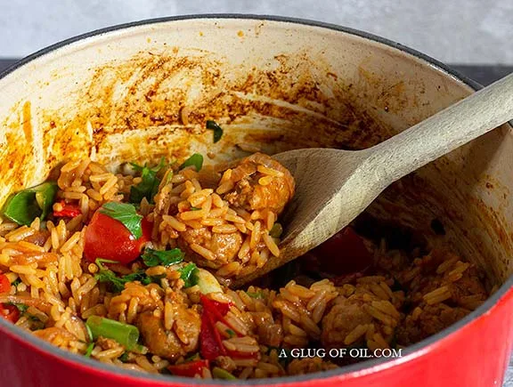

Sausage Fried Rice

This recipe courtesy of Gordon Ramsey is aweosome. Very filling dish that hits all the savory notes I'm looking for.
Ingredients
- 1 tbsp olive oil, for frying
- 1 red onion, sliced
- 1 red pepper, deseeded and chopped (but not too small)
- 2 garlic cloves, very finely sliced
- 5 spiced sausages, e.g. Italian chilli
- 1 heaped teaspoon smoked paprika
- 200g long-grain rice (1 cup)
- ½ glass dry white wine
- 500ml (2 cups) chicken stock
- 4 spring onions, trimmed and sliced
- 2 tomatoes, roughly chopped
- small bunch of flat-leaf parsley, roughly chopped
Preperation
- Add just 1 tbsp of Olive oil to a heavy-based casserole dish and fry the onion for 5 minutes until soft but not coloured.
- Add the pepper and garlic and cook for 2 minutes while moving it about so the garlic doesn't burn.
- Slit the sausage skins and crumble the sausage meat so it looks like small meatballs.
- Turn the heat to high (otherwise, the sausage will steam rather than brown). Cook while moving it about a bit in the pan for about 4-5 minutes until coloured.
- Add the smoked paprika and mix and season to taste.
- Add the rice and stir well to mix thoroughly and absorb the flavour.
- Now deglaze the pan by pouring in the white wine and scraping any bits stuck to the bottom.
- Add the stock and bring to a boil and then turn to a simmer.
- Cook gently for 15–20 minutes until the rice is tender and the liquid almost entirely absorbed. Keep an eye on it and stir from time to time.
- Remove from the heat, gently fold in the spring onions, tomato and parsley and serve.